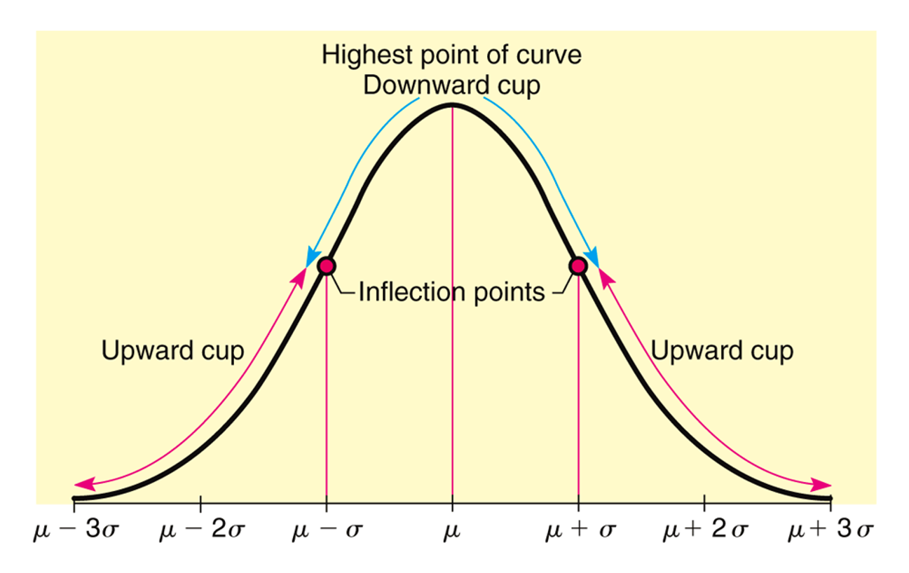
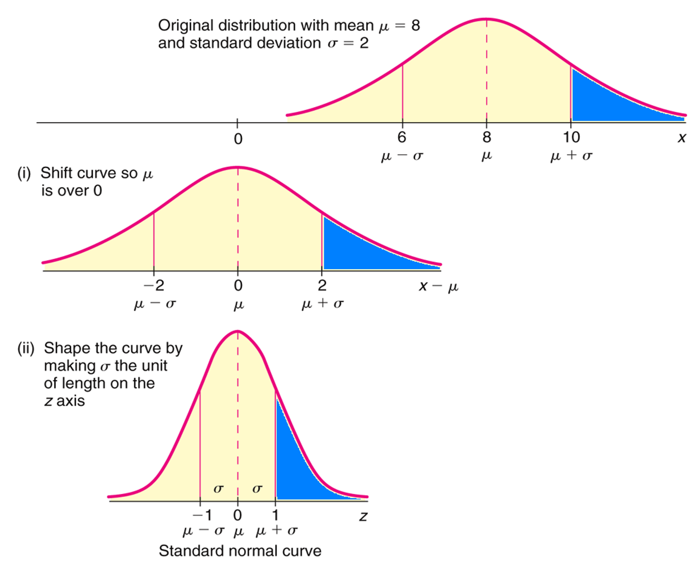
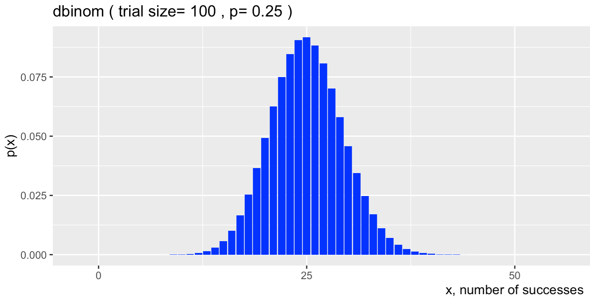
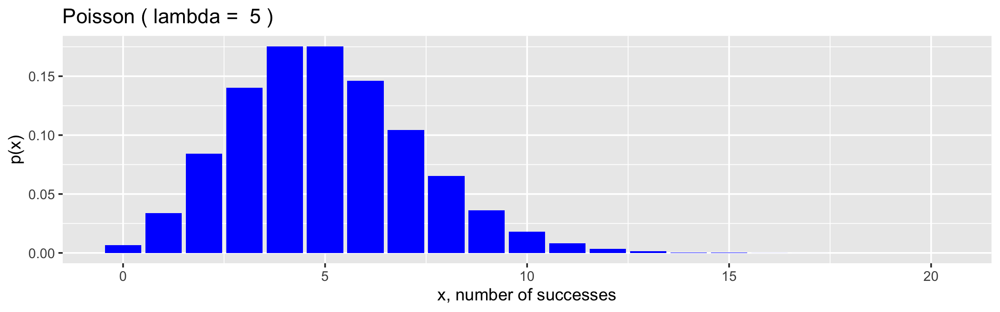

Lesson 7: Normal and Poisson distributions
Chapter 3: Distributions of Random Variables (Part 2)
Day 7 topics:
Section 3.3: Normal distribution Section 3.4: Poisson distribution
Normal distribution
\(\ \)
A random variable \(X\) is modeled with a normal distribution if:
shape: symmetric, unimodal bell curve
center: mean \(\mu\)
spread (variability): standard deviation \(\sigma\)
Curve is determined by the formula \(f(x) = \frac{e^{-\frac{(x-\mu)^2}{2\sigma^2}}}{\sigma\sqrt{2\pi}}\), for \(-\infty < x< \infty\).

The Empirical Rule (a.k.a. the 68-95-99.7 rule)
For a normal distribution:
68% of observations are within one standard deviation (SD) of the mean
95% are within two SD’s
99.7% are within three SD’s
The empirical rule is useful for estimating probabilities.
Standard Normal Distribution
A standard normal r.v. has mean 0 and standard deviation 1.
We denote standard normal r.v.’s with the letter \(Z\).
Calculating Probabilities for a Standard Normal Distribution
Three ways to calculate probabilities from a normal distribution:
CalculusNormal probability table
- The textbook has a normal probability table in Appendix B.1, which is included as the next two pages.
R
\(\mathbb{P}(Z\leq q)\) =
pnorm(q, mean = 0, sd = 1, lower.tail = TRUE)
Example 1. Calculating standard normal probabilities practice Let \(Z\) be a standard normal random variable, \(Z\sim N(\mu=0,\sigma=1)\). Calculate the following probabilities. Include sketches of the normal curves with the probability areas shaded in.
\(\mathbb{P}( Z < 2.67 )\)
\(\mathbb{P}( Z > -0.37 )\)
\(\mathbb{P}( -2.18 < Z < 2.46 )\)
\(\mathbb{P}(Z = 1.53 )\)
Calculating Probabilities for a General Normal Distribution
Example 2. Let \(X\) be a normal r.v. with mean 8 and standard deviation 2. Calculate \(\mathbb{P}(X>10)\).

Z-scores
The \(Z\)-score of an observation quantifies how far the observation is from the mean, in units of standard deviation(s).
For example, if an observation has \(Z\)-score \(z = 3.4\), then the observation is 3.4 standard deviations above the mean.
Example 3. DBP Suppose the distribution of diastolic blood pressure (DBP) in 35- to 44-year old men is normally distributed with mean 80 mm Hg and variance 144 mm Hg.
Mild hypertension is when the DBP is between 90 and 99 mm Hg. What proportion of this population has mild hypertension?
What is the \(10^{th}\) percentile of the DBP distribution?
What is the \(95^{th}\) percentile of the DBP distribution?
Normal approximation of the binomial distribution
Recall that a binomial random variable \(X\) counts the total number of successes in \(n\) independent trials, each with probability \(p\) of a success.
Probability function for \(x = 0, 1, ..., n\) : \[P(X = k) = {n\choose k}p^k(1-p)^{n-k} = \frac{n!}{k!(n-k)!}p^k(1-p)^{n-k}\]
Tedious to compute for large number of trails (\(n\)), although doable with software like R.
As \(n\) gets big though, the distribution shape of a binomial r.v. gets more and more symmetric, and can be approximated by a normal distribution.
Theorem 4. Normal approximation of the binomial distribution The binomial distribution with probability of success \(p\) is nearly normal when the sample size \(n\) is sufficiently large such that \(np \geq 10\) and \(n(1-p)\geq 10\). The approximate normal distribution has parameters corresponding to the mean and standard deviation of the binomial distribution: \[\begin{aligned} \mu &= np &&\sigma= \sqrt{np(1-p)} \end{aligned}\]
Example 5. Vaccinated people testing positive for Covid-19 (revisited) About 25% of people that test positive for Covid-19 are vaccinated for Covid-19. Suppose 100 people have tested positive for Covid-19 (independently of each other). Let \(X\) denote the number of people that are vaccinated amongst the 100 that tested positive. What is the probability that fewer than 20 of the people that tested positive are vaccinated?

Calculate exact probability.
Calculate approximate probability.
Poisson distribution
Discrete distribution
Used to model count data (# of successes), especially for rare events
Used to approximate binomial distribution when \(n\) is large and \(p\) is small
Definition 6. Distribution of a Poisson random variable. Let \(X\) be the total number of successes in an interval (such as time) with an average success rate \(\lambda\). Then probability of observing exactly \(k\) successes in a unit interval is
The parameter of a Poisson distribution is \(\lambda\).
If a r.v. \(X\) is modeled by a Poisson distribution, then we write in shorthand
Theorem 7. Mean and SD of a Poisson r.v. If \(X\) is a Poisson r.v. with parameter \(\lambda\), then
Example 8. Typhoid fever Suppose there are on average 5 deaths per year from typhoid fever over a 1-year period.

What is the probability of 3 deaths in a year?
What is the probability of 2 deaths in 0.5 years?
What is the probability of more than 12 deaths in 2 years?
Example 9. Cleft palate About 1 in every 1,700 babies is born with cleft palate in the United States. Find the probability that there are 2 babies born with cleft palates amongst the next 3000 births at OHSU.
Calculate exact probability.
Calculate approximate probability.